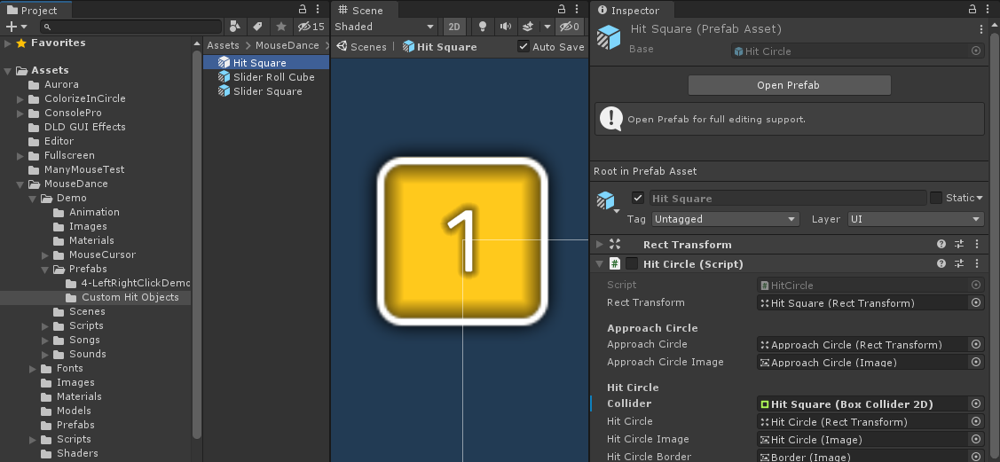

Custom Hit Object Spawning Rules
If you want to have different shaped Hit Circles within the same Beatmap depending on some custom rules, you'll need to sub-class HitObjectSet and override GetHitCirclePrefab and/or GetSliderPrefab:
[UnityEngine.CreateAssetMenu(fileName="MyHitObjectSet", menuName="MouseDance/MyHitObjectSet")]
public class MyHitObjectSet : MouseDance.Runtime.HitObjectSet
{
public MouseDance.Runtime.HitCircle SpecialHitCirclePrefab;
// Called by HitObjectManager whenever it needs to instantiate a Hit Circle,
// as requested by BeatmapRunner, when it deemed that a new Hit Circle needs to be displayed due to the Beatmap.
public override (string, MouseDance.Runtime.HitCircle) GetHitCirclePrefab(int idx, int comboCounter, int comboColourIdx, OsuParsers.Beatmaps.Objects.HitCircle hitCircle, OsuParsers.Beatmaps.Beatmap beatmap)
{
if ((idx+1) % 2 == 0)
{
// even number: use the special kind of hit circle
return ("even", SpecialHitCirclePrefab);
}
else
{
// odd number: use the regular kind of hit circle
return ("odd", HitCirclePrefab);
}
}
public override (string, MouseDance.Runtime.Slider) GetSliderPrefab(int idx, int comboCounter, int comboColourIdx, OsuParsers.Beatmaps.Objects.Slider slider, OsuParsers.Beatmaps.Beatmap beatmap)
{
// change this however you want
return (SliderPrefab.name, SliderPrefab);
}
}
This code example will make Hit Object Manager alternate between two different prefabs when spawning Hit Circles. In this example, odd-numbered are circles, even-numbered are squares.
Tip
If what you wanted instead was to change all Hit Circles to a different prefab, then there's no need to do this code. Just assign your prefab to the HitObjectSet file. See Testing a Hit Circle Prefab Variant for an example.
Creating the script is only half of the solution. Since this is a ScriptableObject type, you need to create an asset of this sub-class in your Project folder.
The UnityEngine.CreateAssetMenu attribute we added in the sample code above makes this easy as it adds an entry in the Project tab's plus button:
Since this is a sub-class of HitObjectSet, it will look mostly the same as a HitObjectSet in the Inspector, save for the new SpecialHitCirclePrefab field we added, found at the very bottom.
Now we need to assign values to the fields. Unfortunately, the concept of Prefab Variants doesn't apply to Scriptable Objects, so we can't just specify our MyHitObjectSet file (the sub-class) to inherit values from a HitObjectSet file (the base class).
That is why the Copy/Paste buttons were added. This is to make it quicker to assign values to the base fields of our MyHitObjectSet file, copying values from the HitObjectSet file.
It is a simple matter of finding and selecting the pre-made HitObjectSet file in MouseDance/Prefabs folder, clicking Copy, then going back to your MyHitObjectSet file, and clicking Paste. This operation is recorded in the undo history, so you can undo it if you made a mistake.
Now the only thing you need to manually assign is that new SpecialHitCirclePrefab field found in the sub-class MyHitObjectSet.
For this example, you can use the pre-made custom Hit Circle called Hit Square from the MouseDance/Demo/Prefabs/Custom Hit Objects folder.

Note
You can refer to Creating a Hit Circle Prefab Variant for details on how to make your own Hit Circle.
Assign the custom Hit Circle in the SpecialHitCirclePrefab field, and it should be ready.
The last thing you need to do is assign that MyHitObjectSet into the HitObjectManager of your scene.
Pool ID
It should be noted that in the sample source code given in this page, not only did we return a Hit Circle Prefab, we also returned a string denoting what type it was (odd or even). This is important because the prefabs are pooled and reused, and the Hit Object Manager needs to be able to differentiate between the two types of Hit Circles. It uses that string to do so.
If you are sure that the prefab names in your project are unique among each other, then you can simply use the Prefab name as the way to differentiate them from each other:
return (HitCirclePrefab.name, HitCirclePrefab);
Please note that the Prefab being referred to here is a prefab asset, before instantiation happens. It's not a prefab that is existing on the scene (yet). So the Prefab name here is its filename in your Project, not a GameObject name.